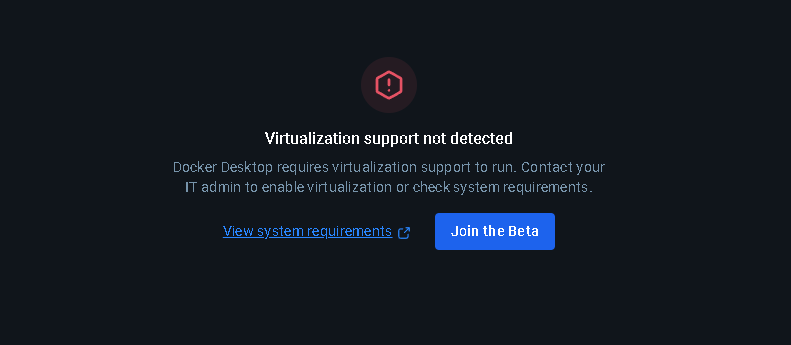

Status: Sucesso ✅
[✔] Build concluído com sucesso no GitHub Actions Workflow: docker-build.yml
No ambiente local o Docker não funcionou corretamente devido ao seguinte erro: Virtualization support not detected, mesmo com virtualização na bios da máquina ligada.
Entretanto, no GitHub Actions o build rodou normalmente, confirmando que o Dockerfile e a configuração do workflow estavam corretos.